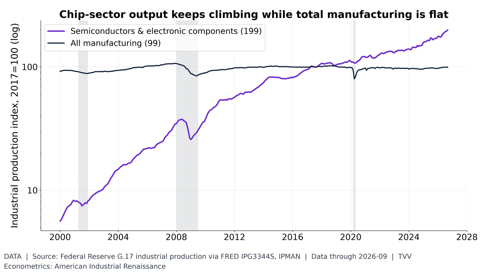
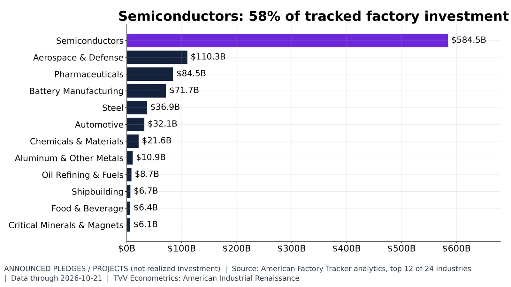

2. Semiconductors

Semiconductor output index 199 vs manufacturing 99 (2017=100), Sep 2026. Federal Reserve G.17.
Data | Data date: 2026-09
- Aug 9, 2022: CHIPS and Science Act signed https://www.congress.gov/bill/117th-congress/house-bill/4346
- Jan 2022: chip output index 125.8 (Data) https://fred.stlouisfed.org/series/IPG3344S
- Sep 2026: 198.6 vs manufacturing 99.4 (Data) https://fred.stlouisfed.org/series/IPG3344S https://fred.stlouisfed.org/series/IPMAN
Sources: https://fred.stlouisfed.org/series/IPG3344S https://fred.stlouisfed.org/series/IPMAN

Semiconductors $584B of $1,004B tracked; defense $110B, pharma $84B, batteries $72B, autos $36B. AFT, Oct 25, 2026.
Announced | Data date: 2026-10-25 (AFT database update)
- Oct 21, 2026: semiconductors $584.5B, 58% of tracked $ (Announced) https://americanfactorytracker.com/analytics
- Aerospace and defense $110.3B, mostly SpaceX Starbase Louisiana $100B (Announced) https://americanfactorytracker.com/forecast
- Pharma $84.5B, batteries $71.7B, steel $36.9B, autos $36.1B (Oct 25, 2026) (Announced) https://americanfactorytracker.com/analytics
- Aug 9, 2022: CHIPS and Science Act signed https://www.congress.gov/bill/117th-congress/house-bill/4346
- Oct 24, 2026: Audi GA ~$4B lifts automotive to $36.1B, 17 projects (Announced) https://americanfactorytracker.com/ https://gov.georgia.gov/press-releases/2026-10-24/gov-kemp-audi-ag-selects-georgia-invest-4-billion-first-us-manufacturing https://www.audi.com/en/press-releases/audi-to-establish-first-us-production-site-in-georgia-investing-4-billion-and-creating-4500-jobs-18420 https://www.cnbc.com/2026/10/24/trump-audi-factory-georgia.html
Sources: https://americanfactorytracker.com/analytics https://gov.georgia.gov/press-releases/2026-10-24/gov-kemp-audi-ag-selects-georgia-invest-4-billion-first-us-manufacturing https://www.audi.com/en/press-releases/audi-to-establish-first-us-production-site-in-georgia-investing-4-billion-and-creating-4500-jobs-18420 https://www.cnbc.com/2026/10/24/trump-audi-factory-georgia.html